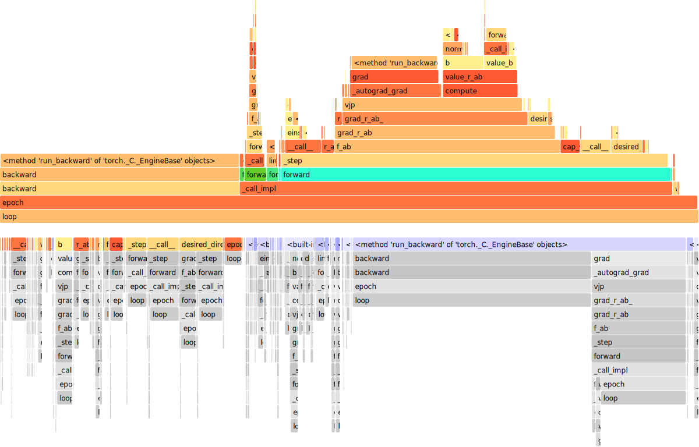

Performance#
Inference for one Scenario#
scenario = socialforce.scenarios.Circle().generate(1)
true_experience = socialforce.Trainer.scenes_to_experience(scenario)
V = socialforce.potentials.PedPedPotentialMLP()
simulator = socialforce.Simulator(ped_ped=V)
opt = torch.optim.SGD(V.parameters(), lr=3.0)
with cProfile.Profile() as pr:
socialforce.Trainer(simulator, opt).loop(10, true_experience, log_interval=10)
INFO:socialforce.trainer:from 1 scenes, extracted 21 experiences, filtered to 10
epoch 10: 0.01452542123151943
ps = pstats.Stats(pr).strip_dirs().sort_stats('tottime')
ps.dump_stats('simulator.prof')
ps.print_stats()
198052 function calls (192052 primitive calls) in 2.184 seconds
Ordered by: internal time
ncalls tottime percall cumtime percall filename:lineno(function)
1100 1.043 0.001 1.043 0.001 {method 'run_backward' of 'torch._C._EngineBase' objects}
2000 0.136 0.000 0.177 0.000 stateutils.py:6(desired_directions)
1000 0.100 0.000 0.107 0.000 simulator.py:187(__call__)
7000 0.091 0.000 0.091 0.000 {built-in method torch._C._linalg.linalg_norm}
1000 0.067 0.000 1.333 0.001 simulator.py:120(_step)
10 0.055 0.006 2.180 0.218 trainer.py:66(epoch)
1000 0.054 0.000 0.141 0.000 pedped_1d.py:21(b)
1000 0.049 0.000 0.125 0.000 field_of_view.py:18(__call__)
2000 0.049 0.000 0.070 0.000 pedped_1d.py:48(r_ab)
1000 0.043 0.000 0.068 0.000 simulator.py:99(cap_velocity)
1000 0.038 0.000 0.038 0.000 {built-in method einsum}
2000 0.030 0.000 0.030 0.000 {built-in method torch._C._nn.linear}
10000 0.022 0.000 0.022 0.000 {method 'unsqueeze' of 'torch._C._TensorBase' objects}
14100 0.022 0.000 0.022 0.000 {method 'detach' of 'torch._C._TensorBase' objects}
3000 0.021 0.000 0.021 0.000 {built-in method clamp}
1000 0.017 0.000 0.779 0.001 simulator.py:89(f_ab)
2000 0.016 0.000 0.016 0.000 {built-in method triu}
2000 0.015 0.000 0.015 0.000 {method 'view' of 'torch._C._TensorBase' objects}
1000 0.015 0.000 0.620 0.001 functional.py:194(vjp)
2000 0.015 0.000 0.069 0.000 pedped_1d.py:102(norm_r_ab)
2000 0.015 0.000 0.015 0.000 {built-in method torch._C._nn.softplus}
2000 0.012 0.000 0.012 0.000 {built-in method tril}
5200/200 0.012 0.000 1.353 0.007 module.py:1045(_call_impl)
3000 0.012 0.000 0.012 0.000 {built-in method diagonal}
2000 0.010 0.000 0.010 0.000 {built-in method isnan}
1000 0.010 0.000 0.010 0.000 {built-in method sum}
2000/1000 0.009 0.000 0.050 0.000 functional.py:186(einsum)
1000 0.009 0.000 0.639 0.001 pedped_1d.py:89(grad_r_ab_)
1000 0.009 0.000 0.013 0.000 _tensor.py:546(__rdiv__)
1000 0.008 0.000 0.113 0.000 pedped_1d.py:166(value_b)
1000 0.008 0.000 0.760 0.001 pedped_1d.py:82(grad_r_ab)
100 0.008 0.000 1.343 0.013 simulator.py:110(forward)
1000 0.007 0.000 0.007 0.000 {built-in method ones}
6000 0.007 0.000 0.007 0.000 module.py:1117(__getattr__)
2000 0.007 0.000 0.042 0.000 linear.py:95(forward)
1000 0.007 0.000 0.007 0.000 {built-in method sqrt}
1000 0.006 0.000 0.076 0.000 container.py:137(forward)
1100 0.006 0.000 0.006 0.000 {method 'clone' of 'torch._C._TensorBase' objects}
1000 0.006 0.000 0.006 0.000 {built-in method full_like}
1000 0.005 0.000 0.016 0.000 stateutils.py:20(speeds)
100 0.005 0.000 0.005 0.000 {built-in method torch._C._nn.l1_loss}
5200 0.005 0.000 0.005 0.000 {built-in method torch._C._get_tracing_state}
3000 0.005 0.000 0.006 0.000 functional.py:7(_as_tuple)
2000 0.005 0.000 0.011 0.000 functional.py:43(_grad_preprocess)
1000 0.005 0.000 0.312 0.000 functional.py:127(_autograd_grad)
1000 0.005 0.000 0.307 0.000 __init__.py:152(grad)
1000 0.004 0.000 0.004 0.000 {built-in method clone}
1000 0.004 0.000 0.004 0.000 {method 'reciprocal' of 'torch._C._TensorBase' objects}
1100 0.004 0.000 0.005 0.000 __init__.py:28(_make_grads)
17426 0.004 0.000 0.004 0.000 {built-in method builtins.isinstance}
1 0.004 0.004 2.184 2.184 trainer.py:92(loop)
1000 0.003 0.000 0.003 0.000 functional.py:150(_fill_in_zeros)
1000 0.003 0.000 0.005 0.000 functional.py:77(_validate_v)
1000 0.003 0.000 0.258 0.000 pedped_1d.py:43(value_r_ab)
200 0.003 0.000 0.003 0.000 {built-in method torch._ops.profiler._record_function_enter}
2000 0.002 0.000 0.004 0.000 grad_mode.py:167(__enter__)
2388 0.002 0.000 0.003 0.000 _tensor.py:967(grad)
2000 0.002 0.000 0.033 0.000 functional.py:1831(linear)
100 0.002 0.000 0.006 0.000 sgd.py:76(step)
100 0.002 0.000 0.008 0.000 optimizer.py:188(zero_grad)
2396 0.002 0.000 0.002 0.000 {method 'requires_grad_' of 'torch._C._TensorBase' objects}
100 0.002 0.000 0.014 0.000 optimizer.py:83(wrapper)
2000 0.002 0.000 0.016 0.000 activation.py:825(forward)
1000 0.002 0.000 0.002 0.000 container.py:129(__iter__)
200 0.002 0.000 0.002 0.000 {built-in method zeros}
2000 0.001 0.000 0.002 0.000 grad_mode.py:171(__exit__)
1200 0.001 0.000 0.002 0.000 grad_mode.py:213(__init__)
6200 0.001 0.000 0.001 0.000 {built-in method torch._C._set_grad_enabled}
1000 0.001 0.000 0.001 0.000 functional.py:95(_check_requires_grad)
400 0.001 0.000 0.001 0.000 {method 'add_' of 'torch._C._TensorBase' objects}
2000 0.001 0.000 0.002 0.000 functional.py:66(_grad_postprocess)
1000 0.001 0.000 0.259 0.000 pedped_1d.py:91(compute)
8222 0.001 0.000 0.001 0.000 {built-in method builtins.len}
2200 0.001 0.000 0.001 0.000 {method 'size' of 'torch._C._TensorBase' objects}
1000 0.001 0.000 0.001 0.000 grad_mode.py:220(__exit__)
1100 0.001 0.000 0.002 0.000 _VF.py:25(__getattr__)
200 0.001 0.000 0.004 0.000 profiler.py:613(__enter__)
3300 0.001 0.000 0.001 0.000 {built-in method torch._C.is_grad_enabled}
2000 0.001 0.000 0.001 0.000 functional.py:26(_tuple_postprocess)
4300 0.001 0.000 0.001 0.000 {method 'append' of 'list' objects}
100 0.001 0.000 0.008 0.000 functional.py:3031(l1_loss)
100 0.001 0.000 0.001 0.000 {built-in method broadcast_tensors}
3100 0.001 0.000 0.001 0.000 {built-in method torch._C._has_torch_function_variadic}
100 0.001 0.000 0.001 0.000 {built-in method ones_like}
100 0.001 0.000 0.008 0.000 grad_mode.py:25(decorate_context)
100 0.001 0.000 0.748 0.007 __init__.py:68(backward)
1000 0.001 0.000 0.001 0.000 simulator.py:93(f_aB)
100 0.001 0.000 0.002 0.000 functional.py:45(broadcast_tensors)
1100 0.001 0.000 0.001 0.000 __init__.py:60(_tensor_or_tensors_to_tuple)
200 0.001 0.000 0.001 0.000 {built-in method torch._ops.profiler._record_function_exit}
100 0.001 0.000 0.001 0.000 simulator.py:55(normalize_state)
100 0.001 0.000 0.001 0.000 grad_mode.py:119(__init__)
100 0.001 0.000 0.002 0.000 _functional.py:146(sgd)
3100 0.001 0.000 0.001 0.000 {built-in method torch._C._has_torch_function}
100 0.001 0.000 0.749 0.007 _tensor.py:205(backward)
200 0.001 0.000 0.002 0.000 profiler.py:605(__init__)
1000 0.000 0.000 0.000 0.000 {built-in method builtins.iter}
804 0.000 0.000 0.001 0.000 _tensor.py:615(__hash__)
1100 0.000 0.000 0.000 0.000 {built-in method builtins.getattr}
396 0.000 0.000 0.000 0.000 {method 'zero_' of 'torch._C._TensorBase' objects}
1000 0.000 0.000 0.000 0.000 {method 'values' of 'collections.OrderedDict' objects}
2488 0.000 0.000 0.000 0.000 {built-in method builtins.hasattr}
3292 0.000 0.000 0.000 0.000 {built-in method torch._C._has_torch_function_unary}
100 0.000 0.000 0.000 0.000 {method 'item' of 'torch._C._TensorBase' objects}
100 0.000 0.000 0.008 0.000 loss.py:96(forward)
200 0.000 0.000 0.001 0.000 profiler.py:617(__exit__)
102 0.000 0.000 0.000 0.000 {method 'format' of 'str' objects}
100 0.000 0.000 0.001 0.000 grad_mode.py:124(__enter__)
806 0.000 0.000 0.000 0.000 {built-in method builtins.id}
1000 0.000 0.000 0.000 0.000 grad_mode.py:217(__enter__)
100 0.000 0.000 0.000 0.000 grad_mode.py:128(__exit__)
10 0.000 0.000 0.000 0.000 random.py:293(shuffle)
100 0.000 0.000 0.000 0.000 _reduction.py:7(get_enum)
90 0.000 0.000 0.000 0.000 random.py:250(_randbelow_with_getrandbits)
1 0.000 0.000 0.000 0.000 socket.py:613(send)
2 0.000 0.000 0.000 0.000 {built-in method torch._C._jit_get_operation}
100 0.000 0.000 0.000 0.000 {method 'numel' of 'torch._C._TensorBase' objects}
100 0.000 0.000 0.000 0.000 _jit_internal.py:881(is_scripting)
12 0.000 0.000 0.000 0.000 module.py:1133(__setattr__)
144 0.000 0.000 0.000 0.000 {method 'getrandbits' of '_random.Random' objects}
2 0.000 0.000 0.000 0.000 _ops.py:56(__getattr__)
2 0.000 0.000 0.000 0.000 iostream.py:535(write)
1 0.000 0.000 0.000 0.000 {built-in method builtins.print}
1 0.000 0.000 0.000 0.000 iostream.py:203(schedule)
90 0.000 0.000 0.000 0.000 {method 'bit_length' of 'int' objects}
1 0.000 0.000 0.000 0.000 module.py:250(__init__)
2 0.000 0.000 0.000 0.000 _builtins.py:160(_register_builtin)
1 0.000 0.000 0.000 0.000 trainer.py:17(__init__)
2 0.000 0.000 0.000 0.000 iostream.py:444(_is_master_process)
1 0.000 0.000 0.000 0.000 _ops.py:52(__init__)
1 0.000 0.000 0.000 0.000 threading.py:1071(is_alive)
2 0.000 0.000 0.000 0.000 {built-in method posix.getpid}
1 0.000 0.000 0.000 0.000 _ops.py:75(__getattr__)
1 0.000 0.000 0.000 0.000 cProfile.py:133(__exit__)
2 0.000 0.000 0.000 0.000 iostream.py:465(_schedule_flush)
36 0.000 0.000 0.000 0.000 {method 'get' of 'dict' objects}
1 0.000 0.000 0.000 0.000 iostream.py:90(_event_pipe)
1 0.000 0.000 0.000 0.000 threading.py:1017(_wait_for_tstate_lock)
1 0.000 0.000 0.000 0.000 loss.py:15(__init__)
1 0.000 0.000 0.000 0.000 loss.py:93(__init__)
1 0.000 0.000 0.000 0.000 {method 'acquire' of '_thread.lock' objects}
1 0.000 0.000 0.000 0.000 {built-in method torch._C._log_api_usage_once}
2 0.000 0.000 0.000 0.000 _builtins.py:129(_get_builtin_table)
2 0.000 0.000 0.000 0.000 {method 'write' of '_io.StringIO' objects}
3 0.000 0.000 0.000 0.000 {built-in method builtins.setattr}
1 0.000 0.000 0.000 0.000 threading.py:513(is_set)
1 0.000 0.000 0.000 0.000 {method 'append' of 'collections.deque' objects}
1 0.000 0.000 0.000 0.000 {method 'disable' of '_lsprof.Profiler' objects}
<pstats.Stats at 0x7f00e83cc550>
!flameprof simulator.prof > simulator_flame.svg
import IPython
IPython.display.SVG(filename='simulator_flame.svg')
